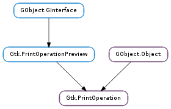

| static | new() |
| cancel() | |
| draw_page_finish() | |
| get_default_page_setup() | |
| get_embed_page_setup() | |
| get_error() | |
| get_has_selection() | |
| get_n_pages_to_print() | |
| get_print_settings() | |
| get_status() | |
| get_status_string() | |
| get_support_selection() | |
| is_finished() | |
| run(action, parent) | |
| set_allow_async(allow_async) | |
| set_current_page(current_page) | |
| set_custom_tab_label(label) | |
| set_default_page_setup(default_page_setup) | |
| set_defer_drawing() | |
| set_embed_page_setup(embed) | |
| set_export_filename(filename) | |
| set_has_selection(has_selection) | |
| set_job_name(job_name) | |
| set_n_pages(n_pages) | |
| set_print_settings(print_settings) | |
| set_show_progress(show_progress) | |
| set_support_selection(support_selection) | |
| set_track_print_status(track_status) | |
| set_unit(unit) | |
| set_use_full_page(full_page) |
| Name | Type | Flags | Description |
|---|---|---|---|
| allow-async | bool | r/w | True if print process may run asynchronous. |
| current-page | int | r/w | The current page in the document |
| custom-tab-label | str | r/w | Label for the tab containing custom widgets. |
| default-page-setup | Gtk.PageSetup | r/w | The Gtk.PageSetup used by default |
| embed-page-setup | bool | r/w | True if page setup combos are embedded in GtkPrintUnixDialog |
| export-filename | str | r/w | Export filename |
| has-selection | bool | r/w | True if a selection exists. |
| job-name | str | r/w | A string used for identifying the print job. |
| n-pages | int | r/w | The number of pages in the document. |
| n-pages-to-print | int | r | The number of pages that will be printed. |
| print-settings | Gtk.PrintSettings | r/w | The Gtk.PrintSettings used for initializing the dialog |
| show-progress | bool | r/w | True if a progress dialog is shown while printing. |
| status | Gtk.PrintStatus | r | The status of the print operation |
| status-string | str | r | A human-readable description of the status |
| support-selection | bool | r/w | True if the print operation will support print of selection. |
| track-print-status | bool | r/w | True if the print operation will continue to report on the print job status after the print data has been sent to the printer or print server. |
| unit | Gtk.Unit | r/w | The unit in which distances can be measured in the context |
| use-full-page | bool | r/w | True if the origin of the context should be at the corner of the page and not the corner of the imageable area |
| Name | Parameters | Return | Description |
|---|---|---|---|
| begin-print | Gtk.PrintContext | Emitted after the user has finished changing print settings in the dialog, before the actual rendering starts. A typical use for ::begin-print is to use the parameters from the Gtk.PrintContext and paginate the document accordingly, and then set the number of pages with Gtk.PrintOperation.set_n_pages (). | |
| create-custom-widget | GObject.Object | Emitted when displaying the print dialog. If you return a widget in a handler for this signal it will be added to a custom tab in the print dialog. You typically return a container widget with multiple widgets in it. The print dialog owns the returned widget, and its lifetime is not controlled by the application. However, the widget is guaranteed to stay around until the Gtk.PrintOperation ::custom-widget-apply signal is emitted on the operation. Then you can read out any information you need from the widgets. | |
| custom-widget-apply | Gtk.Widget | Emitted right before Gtk.PrintOperation ::begin-print if you added a custom widget in the Gtk.PrintOperation ::create-custom-widget handler. When you get this signal you should read the information from the custom widgets, as the widgets are not guaraneed to be around at a later time. | |
| done | Gtk.PrintOperationResult | Emitted when the print operation run has finished doing everything required for printing. result gives you information about what happened during the run. If result is Gtk.PrintOperationResult.ERROR then you can call Gtk.PrintOperation.get_error () for more information. If you enabled print status tracking then Gtk.PrintOperation.is_finished () may still return False after Gtk.PrintOperation ::done was emitted. | |
| draw-page | Gtk.PrintContext, int | Emitted for every page that is printed. The signal handler must render the page_nr ‘s page onto the cairo context obtained from context using Gtk.PrintContext.get_cairo_context (). .. code-block:: c static void draw_page (GtkPrintOperation *operation, GtkPrintContext *context, gint page_nr, gpointer user_data) { cairo_t *cr; PangoLayout *layout; gdouble width, text_height; gint layout_height; PangoFontDescription *desc; cr = gtk_print_context_get_cairo_context (context); width = gtk_print_context_get_width (context); cairo_rectangle (cr, 0, 0, width, HEADER_HEIGHT); cairo_set_source_rgb (cr, 0.8, 0.8, 0.8); cairo_fill (cr); layout = gtk_print_context_create_pango_layout (context); desc = pango_font_description_from_string (“sans 14”); pango_layout_set_font_description (layout, desc); pango_font_description_free (desc); pango_layout_set_text (layout, “some text”, -1); pango_layout_set_width (layout, width * PANGO_SCALE); pango_layout_set_alignment (layout, PANGO_ALIGN_CENTER); pango_layout_get_size (layout, NULL, &layout_height); text_height = (gdouble)layout_height / PANGO_SCALE; cairo_move_to (cr, width / 2, (HEADER_HEIGHT - text_height) / 2); pango_cairo_show_layout (cr, layout); g_object_unref (layout); } Use Gtk.PrintOperation.set_use_full_page () and Gtk.PrintOperation.set_unit () before starting the print operation to set up the transformation of the cairo context according to your needs. | |
| end-print | Gtk.PrintContext | Emitted after all pages have been rendered. A handler for this signal can clean up any resources that have been allocated in the Gtk.PrintOperation ::begin-print handler. | |
| paginate | Gtk.PrintContext | bool | Emitted after the Gtk.PrintOperation ::begin-print signal, but before the actual rendering starts. It keeps getting emitted until a connected signal handler returns True. The ::paginate signal is intended to be used for paginating a document in small chunks, to avoid blocking the user interface for a long time. The signal handler should update the number of pages using Gtk.PrintOperation.set_n_pages (), and return True if the document has been completely paginated. If you don’t need to do pagination in chunks, you can simply do it all in the ::begin-print handler, and set the number of pages from there. |
| preview | Gtk.PrintOperationPreview, Gtk.PrintContext, Gtk.Window | bool | Gets emitted when a preview is requested from the native dialog. The default handler for this signal uses an external viewer application to preview. To implement a custom print preview, an application must return True from its handler for this signal. In order to use the provided context for the preview implementation, it must be given a suitable cairo context with Gtk.PrintContext.set_cairo_context (). The custom preview implementation can use Gtk.PrintOperationPreview.is_selected () and Gtk.PrintOperationPreview.render_page () to find pages which are selected for print and render them. The preview must be finished by calling Gtk.PrintOperationPreview.end_preview () (typically in response to the user clicking a close button). |
| request-page-setup | Gtk.PrintContext, int, Gtk.PageSetup | Emitted once for every page that is printed, to give the application a chance to modify the page setup. Any changes done to setup will be in force only for printing this page. | |
| status-changed | Emitted at between the various phases of the print operation. See Gtk.PrintStatus for the phases that are being discriminated. Use Gtk.PrintOperation.get_status () to find out the current status. | ||
| update-custom-widget | Gtk.Widget, Gtk.PageSetup, Gtk.PrintSettings | Emitted after change of selected printer. The actual page setup and print settings are passed to the custom widget, which can actualize itself according to this change. |
| Name | Type | Access |
|---|---|---|
| parent_instance | GObject.Object | r |
Bases: GObject.Object, Gtk.PrintOperationPreview
Gtk.PrintOperation is the high-level, portable printing API. It looks a bit different than other GTK+ dialogs such as the Gtk.FileChooser, since some platforms don’t expose enough infrastructure to implement a good print dialog. On such platforms, Gtk.PrintOperation uses the native print dialog. On platforms which do not provide a native print dialog, GTK+ uses its own, see #GtkPrintUnixDialog.
The typical way to use the high-level printing API is to create a Gtk.PrintOperation object with Gtk.PrintOperation.new () when the user selects to print. Then you set some properties on it, e.g. the page size, any Gtk.PrintSettings from previous print operations, the number of pages, the current page, etc.
Then you start the print operation by calling Gtk.PrintOperation.run (). It will then show a dialog, let the user select a printer and options. When the user finished the dialog various signals will be emitted on the Gtk.PrintOperation, the main one being Gtk.PrintOperation ::draw-page, which you are supposed to catch and render the page on the provided Gtk.PrintContext using Cairo.
The high-level printing API
static GtkPrintSettings *settings = NULL;
static void
do_print (void)
{
GtkPrintOperation *print;
GtkPrintOperationResult res;
print = gtk_print_operation_new ();
if (settings != NULL)
gtk_print_operation_set_print_settings (print, settings);
g_signal_connect (print, "begin_print", G_CALLBACK (begin_print), NULL);
g_signal_connect (print, "draw_page", G_CALLBACK (draw_page), NULL);
res = gtk_print_operation_run (print, GTK_PRINT_OPERATION_ACTION_PRINT_DIALOG,
GTK_WINDOW (main_window), NULL);
if (res == GTK_PRINT_OPERATION_RESULT_APPLY)
{
if (settings != NULL)
g_object_unref (settings);
settings = g_object_ref (gtk_print_operation_get_print_settings (print));
}
g_object_unref (print);
}
By default Gtk.PrintOperation uses an external application to do print preview. To implement a custom print preview, an application must connect to the preview signal. The functions Gtk.PrintOperationPreview.render_page (), Gtk.PrintOperationPreview.end_preview () and Gtk.PrintOperationPreview.is_selected () are useful when implementing a print preview.
| Returns: | a new Gtk.PrintOperation |
|---|---|
| Return type: | Gtk.PrintOperation |
Creates a new Gtk.PrintOperation.
Cancels a running print operation. This function may be called from a Gtk.PrintOperation ::begin-print, Gtk.PrintOperation ::paginate or Gtk.PrintOperation ::draw-page signal handler to stop the currently running print operation.
Signalize that drawing of particular page is complete.
It is called after completion of page drawing (e.g. drawing in another thread). If Gtk.PrintOperation.set_defer_drawing () was called before, then this function has to be called by application. In another case it is called by the library itself.
| Returns: | the default page setup |
|---|---|
| Return type: | Gtk.PageSetup |
Returns the default page setup, see Gtk.PrintOperation.set_default_page_setup ().
| Returns: | whether page setup selection combos are embedded |
|---|---|
| Return type: | bool |
Gets the value of Gtk.PrintOperation :embed-page-setup property.
| Raises: | GLib.GError |
|---|
Call this when the result of a print operation is Gtk.PrintOperationResult.ERROR, either as returned by Gtk.PrintOperation.run (), or in the Gtk.PrintOperation ::done signal handler. The returned GLib.Error will contain more details on what went wrong.
| Returns: | whether there is a selection |
|---|---|
| Return type: | bool |
Gets the value of Gtk.PrintOperation :has-selection property.
| Returns: | the number of pages that will be printed |
|---|---|
| Return type: | int |
Returns the number of pages that will be printed.
Note that this value is set during print preparation phase (Gtk.PrintStatus.PREPARING ), so this function should never be called before the data generation phase (Gtk.PrintStatus.GENERATING_DATA ). You can connect to the Gtk.PrintOperation ::status-changed signal and call Gtk.PrintOperation.get_n_pages_to_print () when print status is Gtk.PrintStatus.GENERATING_DATA. This is typically used to track the progress of print operation.
| Returns: | the current print settings of op. |
|---|---|
| Return type: | Gtk.PrintSettings |
Returns the current print settings.
Note that the return value is None until either Gtk.PrintOperation.set_print_settings () or Gtk.PrintOperation.run () have been called.
| Returns: | the status of the print operation |
|---|---|
| Return type: | Gtk.PrintStatus |
Returns the status of the print operation. Also see Gtk.PrintOperation.get_status_string ().
| Returns: | a string representation of the status of the print operation |
|---|---|
| Return type: | str |
Returns a string representation of the status of the print operation. The string is translated and suitable for displaying the print status e.g. in a Gtk.Statusbar.
Use Gtk.PrintOperation.get_status () to obtain a status value that is suitable for programmatic use.
| Returns: | whether the application supports print of selection |
|---|---|
| Return type: | bool |
Gets the value of Gtk.PrintOperation :support-selection property.
| Returns: | True, if the print operation is finished. |
|---|---|
| Return type: | bool |
A convenience function to find out if the print operation is finished, either successfully (Gtk.PrintStatus.FINISHED ) or unsuccessfully (Gtk.PrintStatus.FINISHED_ABORTED ).
Note: when you enable print status tracking the print operation can be in a non-finished state even after done has been called, as the operation status then tracks the print job status on the printer.
| Parameters: |
|
|---|---|
| Raises: | |
| Returns: | the result of the print operation. A return value of Gtk.PrintOperationResult.APPLY indicates that the printing was completed successfully. In this case, it is a good idea to obtain the used print settings with Gtk.PrintOperation.get_print_settings () and store them for reuse with the next print operation. A value of Gtk.PrintOperationResult.IN_PROGRESS means the operation is running asynchronously, and will emit the Gtk.PrintOperation ::done signal when done. |
| Return type: |
Runs the print operation, by first letting the user modify print settings in the print dialog, and then print the document.
Normally that this function does not return until the rendering of all pages is complete. You can connect to the Gtk.PrintOperation ::status-changed signal on op to obtain some information about the progress of the print operation. Furthermore, it may use a recursive mainloop to show the print dialog.
If you call Gtk.PrintOperation.set_allow_async () or set the Gtk.PrintOperation :allow-async property the operation will run asynchronously if this is supported on the platform. The Gtk.PrintOperation ::done signal will be emitted with the result of the operation when the it is done (i.e. when the dialog is canceled, or when the print succeeds or fails).
if (settings != NULL)
gtk_print_operation_set_print_settings (print, settings);
if (page_setup != NULL)
gtk_print_operation_set_default_page_setup (print, page_setup);
g_signal_connect (print, "begin-print",
G_CALLBACK (begin_print), &data);
g_signal_connect (print, "draw-page",
G_CALLBACK (draw_page), &data);
res = gtk_print_operation_run (print,
GTK_PRINT_OPERATION_ACTION_PRINT_DIALOG,
parent,
&error);
if (res == GTK_PRINT_OPERATION_RESULT_ERROR)
{
error_dialog = gtk_message_dialog_new (GTK_WINDOW (parent),
GTK_DIALOG_DESTROY_WITH_PARENT,
GTK_MESSAGE_ERROR,
GTK_BUTTONS_CLOSE,
"Error printing file:\n%s",
error->message);
g_signal_connect (error_dialog, "response",
G_CALLBACK (gtk_widget_destroy), NULL);
gtk_widget_show (error_dialog);
g_error_free (error);
}
else if (res == GTK_PRINT_OPERATION_RESULT_APPLY)
{
if (settings != NULL)
g_object_unref (settings);
settings = g_object_ref (gtk_print_operation_get_print_settings (print));
}
Note that Gtk.PrintOperation.run () can only be called once on a given Gtk.PrintOperation.
| Parameters: | allow_async (bool) – True to allow asynchronous operation |
|---|
Sets whether the Gtk.PrintOperation.run () may return before the print operation is completed. Note that some platforms may not allow asynchronous operation.
| Parameters: | current_page (int) – the current page, 0-based |
|---|
Sets the current page.
If this is called before Gtk.PrintOperation.run (), the user will be able to select to print only the current page.
Note that this only makes sense for pre-paginated documents.
| Parameters: | label (str or None) – the label to use, or None to use the default label |
|---|
Sets the label for the tab holding custom widgets.
| Parameters: | default_page_setup (Gtk.PageSetup or None) – a Gtk.PageSetup, or None |
|---|
Makes default_page_setup the default page setup for op.
This page setup will be used by Gtk.PrintOperation.run (), but it can be overridden on a per-page basis by connecting to the Gtk.PrintOperation ::request-page-setup signal.
Sets up the Gtk.PrintOperation to wait for calling of Gtk.PrintOperation.draw_page_finish () from application. It can be used for drawing page in another thread.
This function must be called in the callback of “draw-page” signal.
| Parameters: | embed (bool) – True to embed page setup selection in the #GtkPrintUnixDialog |
|---|
Embed page size combo box and orientation combo box into page setup page. Selected page setup is stored as default page setup in Gtk.PrintOperation.
| Parameters: | filename (str) – the filename for the exported file |
|---|
Sets up the Gtk.PrintOperation to generate a file instead of showing the print dialog. The indended use of this function is for implementing “Export to PDF” actions. Currently, PDF is the only supported format.
“Print to PDF” support is independent of this and is done by letting the user pick the “Print to PDF” item from the list of printers in the print dialog.
| Parameters: | has_selection (bool) – True indicates that a selection exists |
|---|
Sets whether there is a selection to print.
Application has to set number of pages to which the selection will draw by Gtk.PrintOperation.set_n_pages () in a callback of Gtk.PrintOperation ::begin-print.
| Parameters: | job_name (str) – a string that identifies the print job |
|---|
Sets the name of the print job. The name is used to identify the job (e.g. in monitoring applications like eggcups).
If you don’t set a job name, GTK+ picks a default one by numbering successive print jobs.
| Parameters: | n_pages (int) – the number of pages |
|---|
Sets the number of pages in the document.
This must be set to a positive number before the rendering starts. It may be set in a Gtk.PrintOperation ::begin-print signal hander.
Note that the page numbers passed to the Gtk.PrintOperation ::request-page-setup and Gtk.PrintOperation ::draw-page signals are 0-based, i.e. if the user chooses to print all pages, the last ::draw-page signal will be for page n_pages - 1.
| Parameters: | print_settings (Gtk.PrintSettings or None) – Gtk.PrintSettings |
|---|
Sets the print settings for op. This is typically used to re-establish print settings from a previous print operation, see Gtk.PrintOperation.run ().
| Parameters: | show_progress (bool) – True to show a progress dialog |
|---|
If show_progress is True, the print operation will show a progress dialog during the print operation.
| Parameters: | support_selection (bool) – True to support selection |
|---|
Sets whether selection is supported by Gtk.PrintOperation.
| Parameters: | track_status (bool) – True to track status after printing |
|---|
If track_status is True, the print operation will try to continue report on the status of the print job in the printer queues and printer. This can allow your application to show things like “out of paper” issues, and when the print job actually reaches the printer.
This function is often implemented using some form of polling, so it should not be enabled unless needed.
| Parameters: | unit (Gtk.Unit) – the unit to use |
|---|
Sets up the transformation for the cairo context obtained from Gtk.PrintContext in such a way that distances are measured in units of unit.
| Parameters: | full_page (bool) – True to set up the Gtk.PrintContext for the full page |
|---|
If full_page is True, the transformation for the cairo context obtained from Gtk.PrintContext puts the origin at the top left corner of the page (which may not be the top left corner of the sheet, depending on page orientation and the number of pages per sheet). Otherwise, the origin is at the top left corner of the imageable area (i.e. inside the margins).